Kling pixel finish candidate Actual exported artwork. Smooth references are scaled for display; pixel previews use integer enlargement. Storybook references are different authored art. Original timing is retained. Fine seams and source motion blur remain.
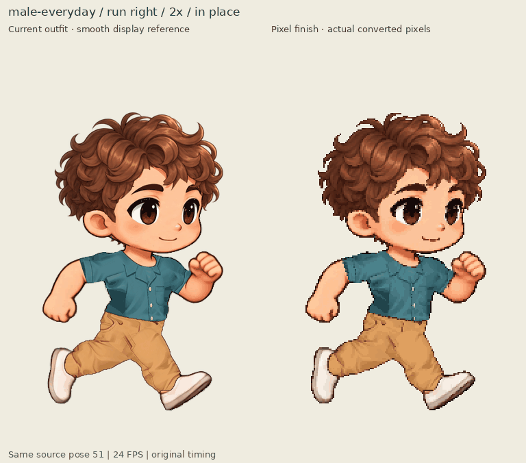
male-everyday-run-comparison-right-2x.gif 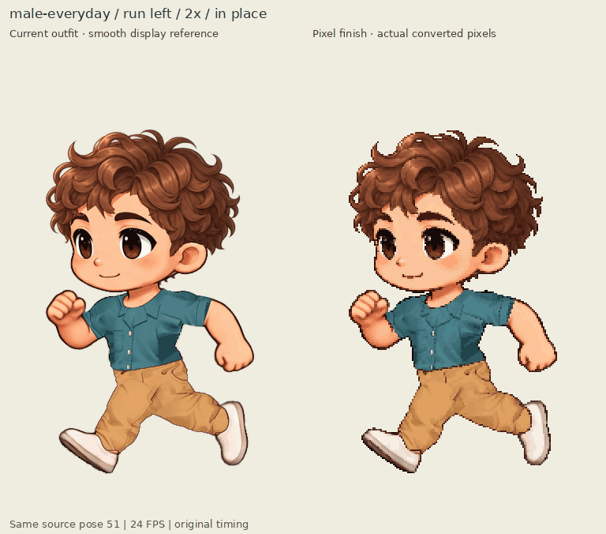
male-everyday-run-comparison-left-2x.gif 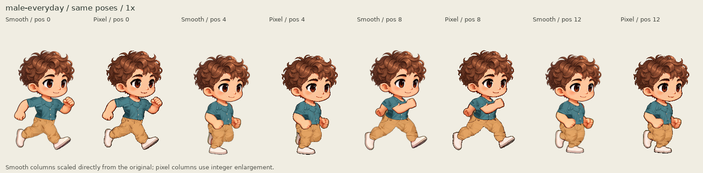
male-everyday-run-keyframes-1x.png 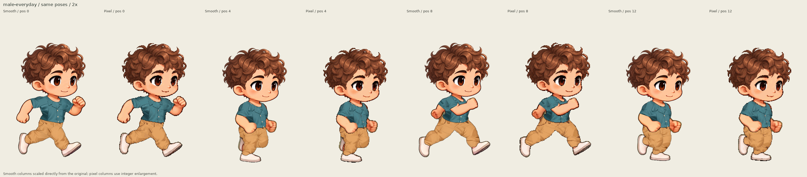
male-everyday-run-keyframes-2x.png male-everyday-head-4x.png 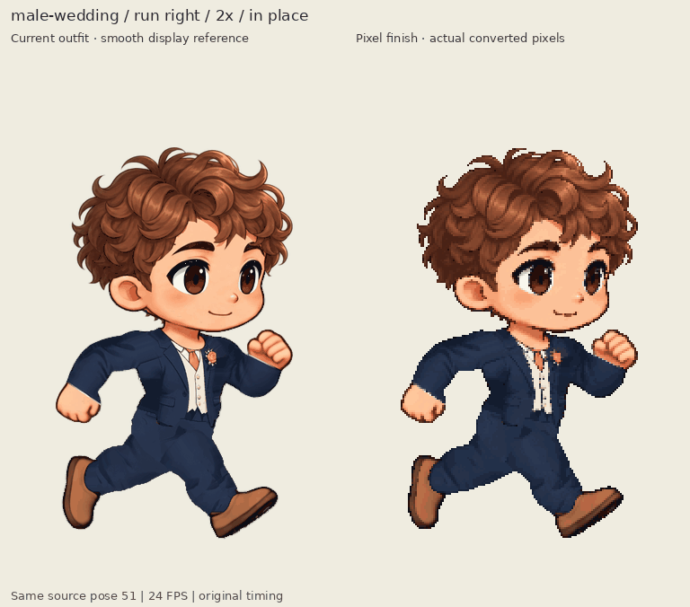
male-wedding-run-comparison-right-2x.gif 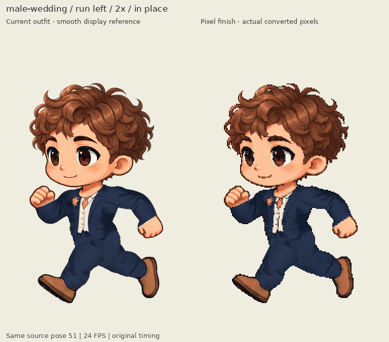
male-wedding-run-comparison-left-2x.gif 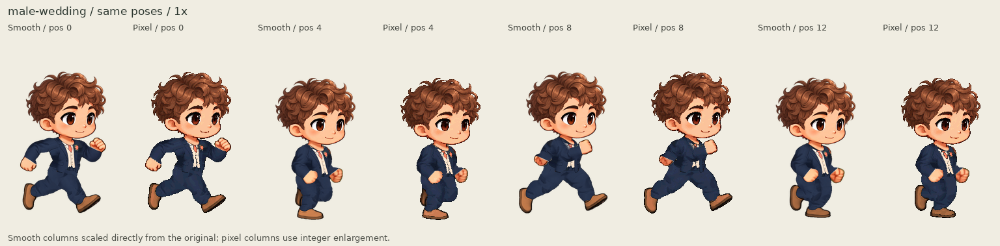
male-wedding-run-keyframes-1x.png 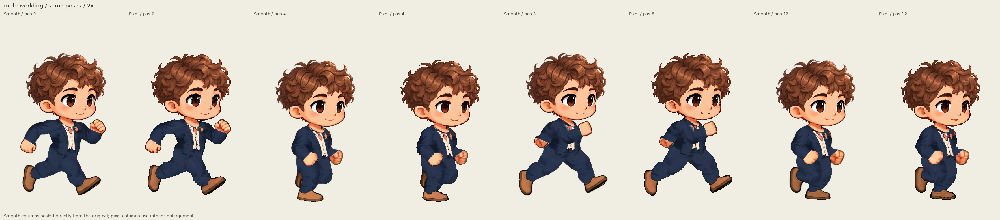
male-wedding-run-keyframes-2x.png male-wedding-head-4x.png 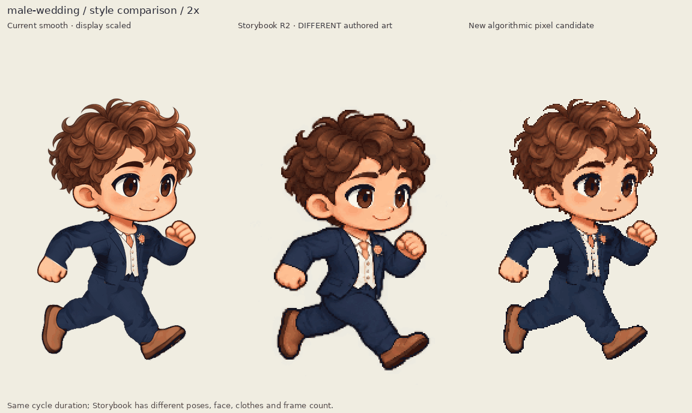
male-wedding-three-styles-right-2x.gif 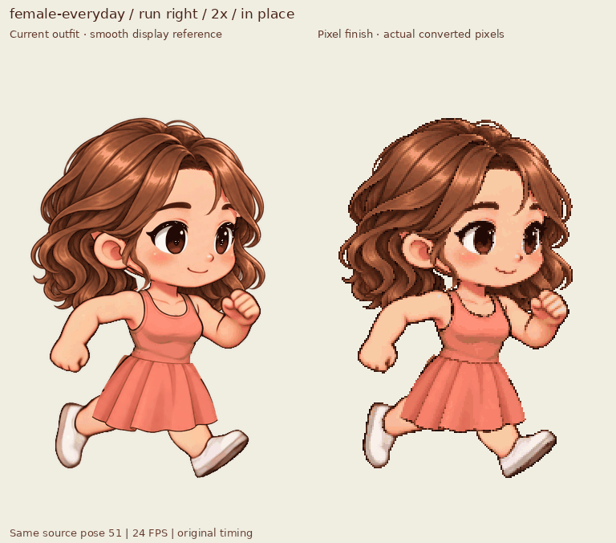
female-everyday-run-comparison-right-2x.gif 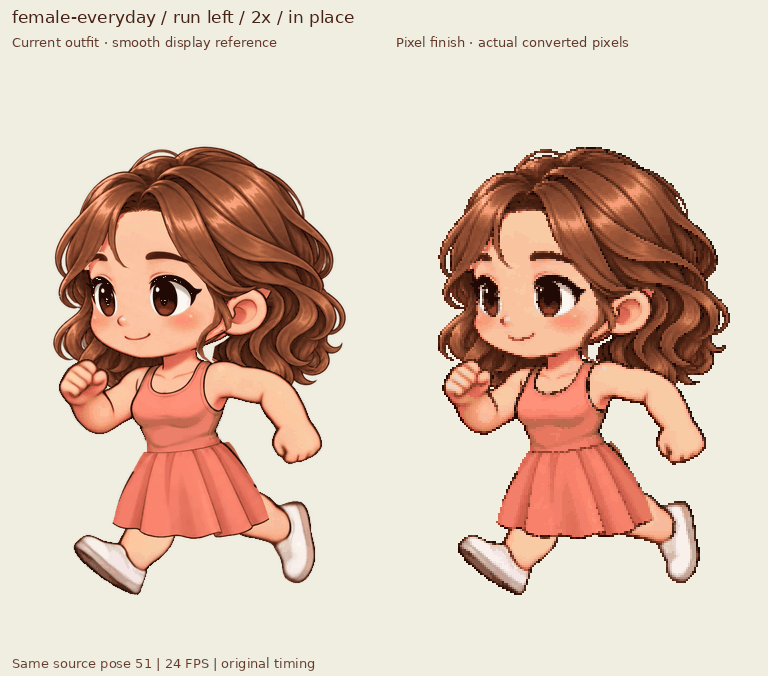
female-everyday-run-comparison-left-2x.gif 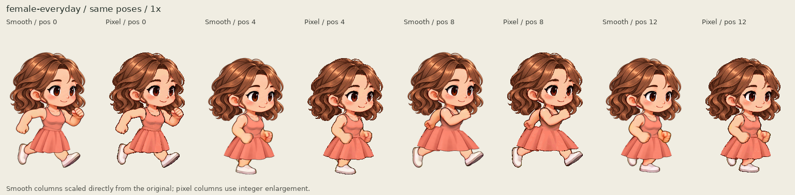
female-everyday-run-keyframes-1x.png 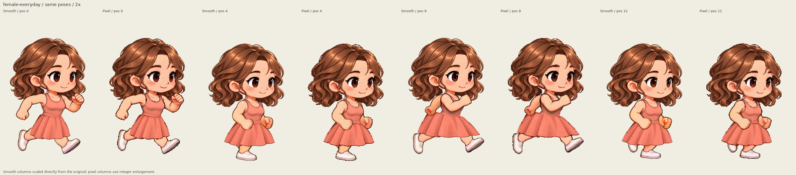
female-everyday-run-keyframes-2x.png female-everyday-head-4x.png 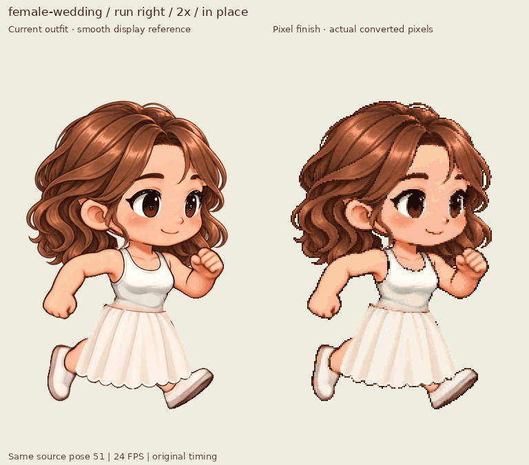
female-wedding-run-comparison-right-2x.gif 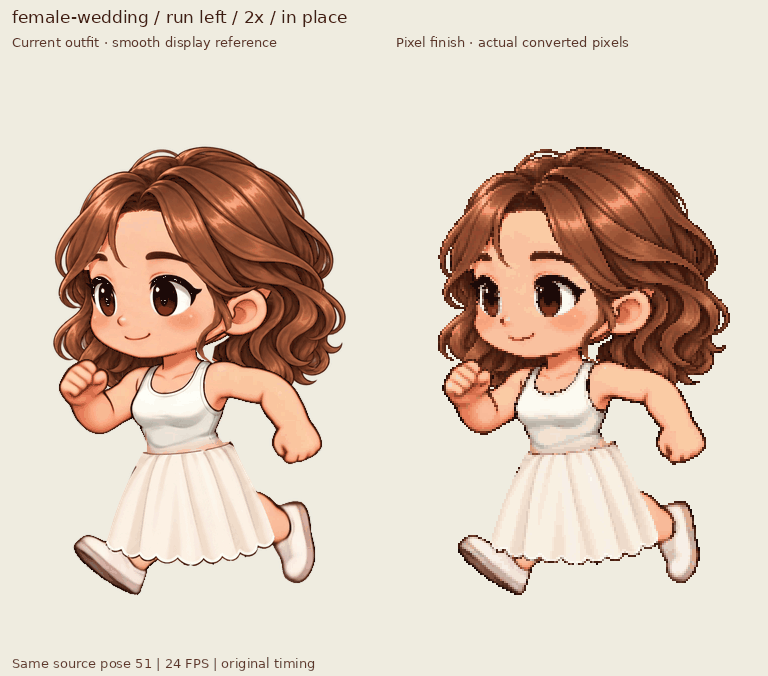
female-wedding-run-comparison-left-2x.gif 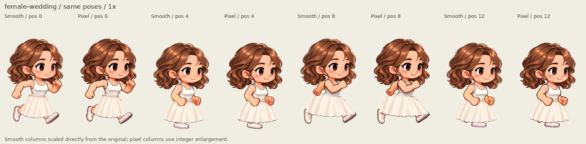
female-wedding-run-keyframes-1x.png 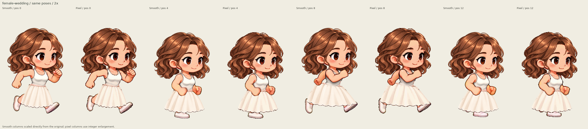
female-wedding-run-keyframes-2x.png female-wedding-head-4x.png 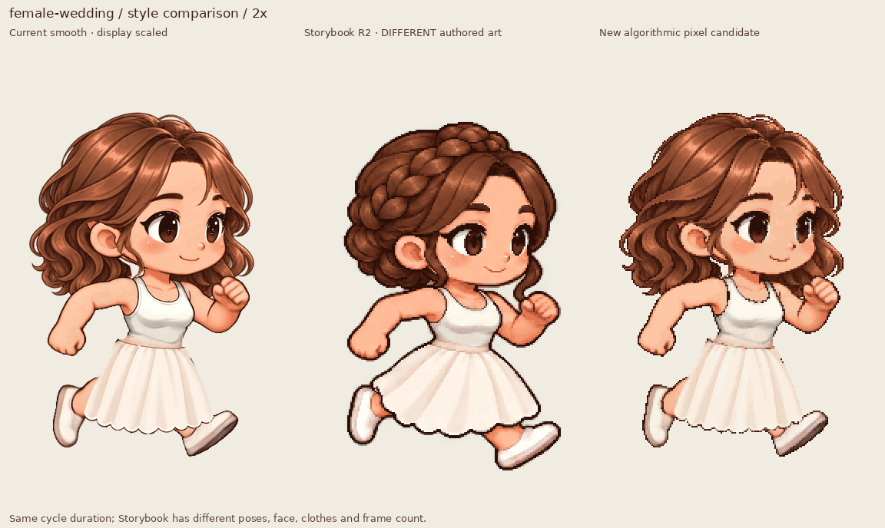
female-wedding-three-styles-right-2x.gif